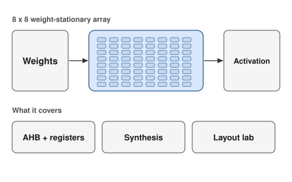

01 · ECE 337 · ASIC
AHB Neural Network Accelerator
An 8×8 weight-stationary systolic array with FP8 input, activation modes and an AHB register interface, taken through RTL simulation, synthesis and timing analysis.
Open project →